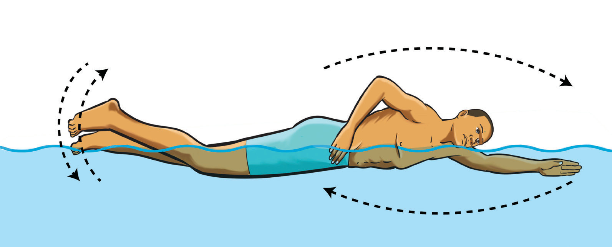

is recovering above the water and exhale while the face is submerged, Figure 3.19.

Activity 3.8
Practice front crawl repetitively to master the skill.
Backstroke
Backstroke is a swimming style performed on the swimmer’s back with a flutter kick and alternating arms motion where one arm pulls through the water from above the head to the hip while the other recovers above the water. It allows for unrestricted breathing since the face remains above water, making it a preferred stroke for beginners and a crucial technique in competitive swimming. Proper coordination of arm movements, leg kicks, and body positioning ensures smooth and efficient swimming. The following steps will help you practice backstroke:
Lie in water face-up, keeping the body streamlined to minimize resistance;
Move your arms in an alternating windmill motion. One arm extends forward and enters the water, while the other pulls back beneath the body to generate propulsion;
Move your legs continuously in a flutter kick to maintain balance, stability, and forward momentum while reducing drag; and
Breath naturally free as your face is up, maintaining proper head positioning to avoid excessive movement that could slow you down. Keeping the head still and looking upwards helps in maintaining balance and direction.
Use lane markers or ceiling patterns to help you maintain direction without trying to turn. A streamlined body position, with the hips and legs kept near the water’s surface, minimizes drag and improves speed, Figure 3.20.